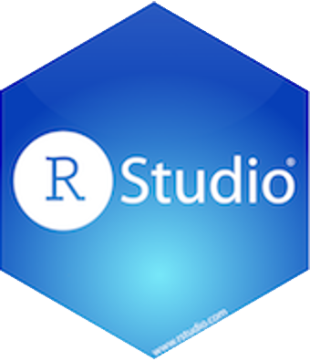
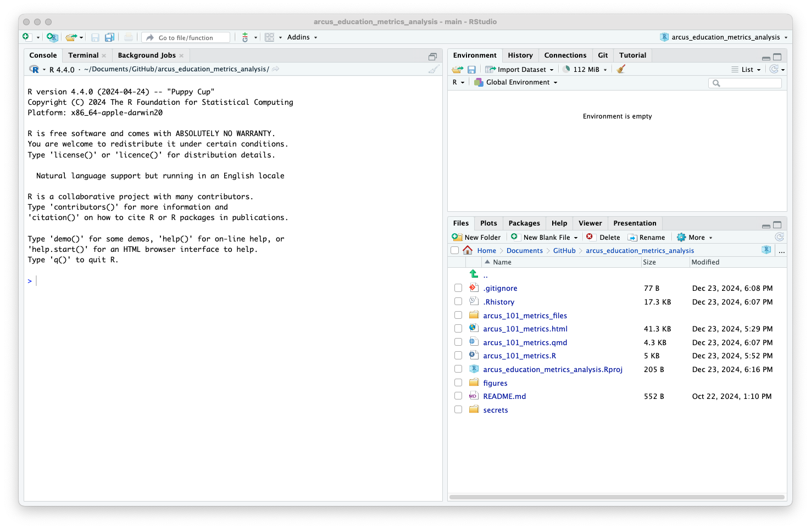

# Ingest data from REDCap
arcus_101_feedback_token <- readr::read_file("secrets/quick_arcus_101_feedback_token.txt")
arcus_101_feedback <- get_data(arcus_101_feedback_token)
# Get raw data and add the labels back in the correct order, show change over time
arcus_101_feedback_updated <- arcus_101_feedback %>%
# We don't need the "completeness" value
select(-arcus_101_effectiveness_complete) %>%
# Transform all the "knowledge" questions
mutate(across(starts_with("knowledge"),
~ factor(.x, levels = c("Very little knowledge",
"Some knowledge",
"Lots of knowledge",
"Expert"))),
# Transform all the "opinion" questions (pre)
opinion_pre = factor(opinion_pre,
levels = c("Largely negative, I didn't think Arcus was useful or helpful to CHOP.",
"Somewhat negative, I had doubts about how useful or helpful Arcus was to CHOP.",
"Neutral, I didn't have a strong opinion.",
"Somewhat positive, I believed that Arcus was useful or helpful to CHOP.",
"Largely positive, I was certain that Arcus was useful or helpful to CHOP.")),
# Transform all the "opinion" questions (post)
opinion_post = factor(opinion_post,
levels = c("Largely negative, I don't think Arcus is useful or helpful to CHOP.",
"Somewhat negative, I have doubts about how useful or helpful Arcus is to CHOP.",
"Neutral, I don't have a strong opinion.",
"Somewhat positive, I believe that Arcus is useful or helpful to CHOP.",
"Largely positive, I am certain that Arcus is useful or helpful to CHOP.")),
# Measure change (pre to post)
knowledge_change = as.numeric(knowledge_post)-as.numeric(knowledge_pre),
opinion_change = as.numeric(opinion_post)-as.numeric(opinion_pre),
)
# Make a bar chart showing pre-intervention knowledge
ggplot(arcus_101_feedback_updated) +
geom_bar(aes(x=knowledge_pre)) +
scale_x_discrete(drop=FALSE) +
labs(title = "Knowledge of Arcus Before 101") +
xlab("")
# Save this graph for later
ggsave("figures/pre_101_knowledge.png")About Arcus / Your Presenter
Arcus is an initiative by the Research Institute aimed at promoting data discovery and reuse and increasing research reproducibility.
- Arcus app: https://arcus.chop.edu
- Arcus Sharepoint site: https://chop365.sharepoint.com/sites/Arcus
Among the many teams in Arcus, I represent Arcus Education!

Arcus Education

Arcus education provides data science training to researchers …
(and often this is useful to non-researchers too!).
https://arcus.chop.edu/i-want-to/arcus-education
Email us! arcus-education@chop.edu
Why Does This Matter?
Which is a better tool?
- A multi-tool (like a Swiss Army knife)
- A mostly mono-task tool (like a cherry pitter)
It depends! R is more focused / narrow… which can be good for beginners.
 “Stainless 2CR Multi-tool”, Santeri Viinamäki, CC BY-SA 4.0, via Wikimedia Commons
“Stainless 2CR Multi-tool”, Santeri Viinamäki, CC BY-SA 4.0, via Wikimedia Commons
R Vs RStudio


R Programming language for data analysis
RStudio Integrated development environment (IDE)
Using R Alone vs With RStudio


The R App

RStudio

RStudio: Runs Lots of Places


Posit.cloud
Hosted by Posit (in the cloud)
Posit Workbench
Hosted by a company, on prem or in the cloud
RStudio Desktop
Installed on your computer
Next Session
Literate Statistical Programming
Friday, March 7, 2025 at 12 pm sign up link
Tuesday, March 11, 2025 at 12 pm sign up link
- Review of R and RStudio
- Literate programming is a programming paradigm
- Research reproducibility reminders
- Quarto documents
- Next steps